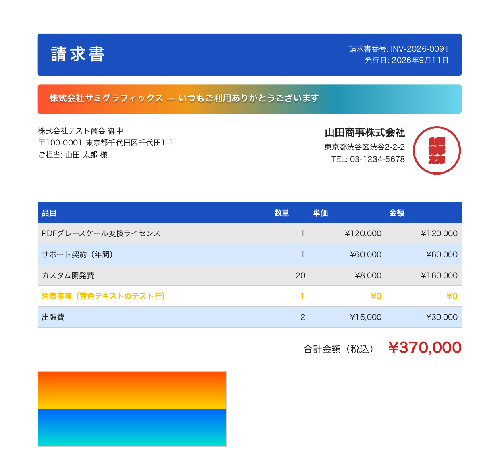
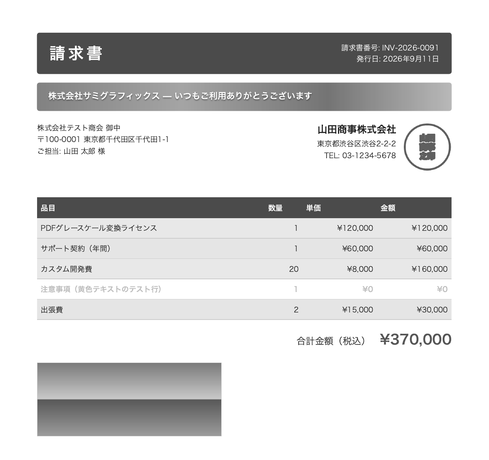
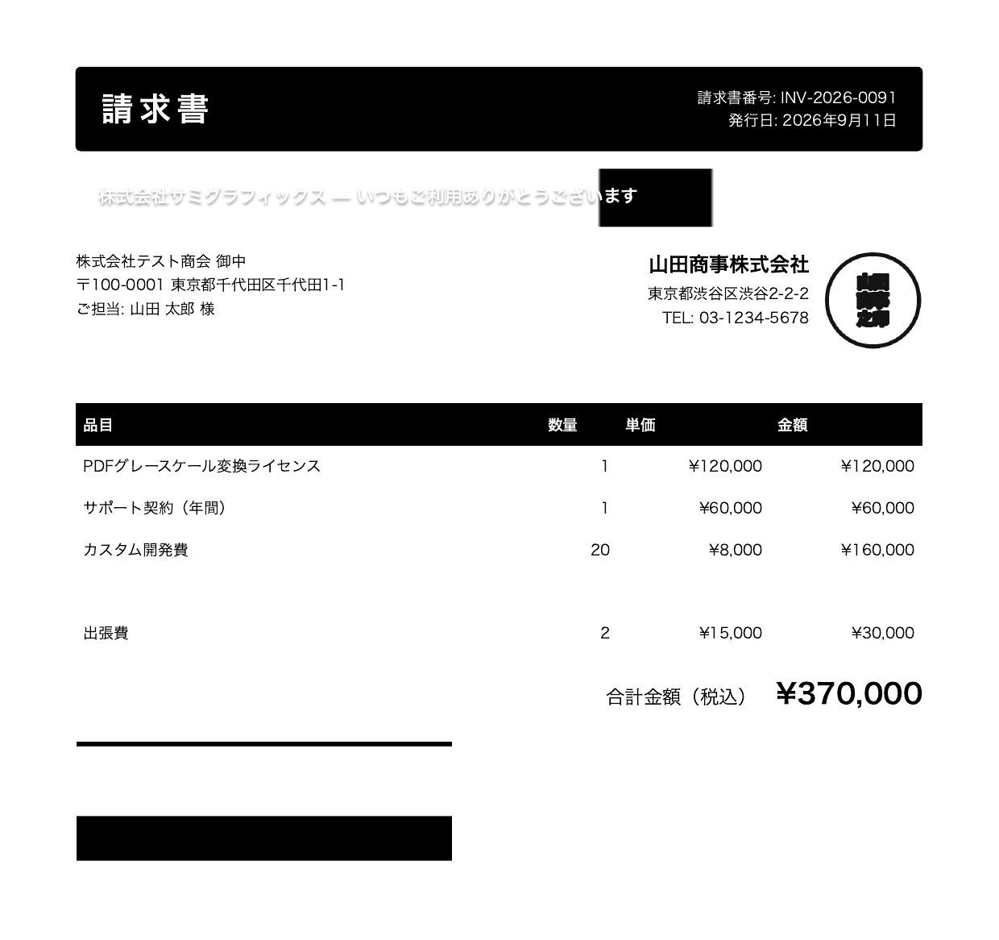

3 分でわかる
sumi の
すごいところ
カラーの PDF を、文字のまま白黒にする Rust 製のコマンドです。
Junya Ishihara / github.com/champierre/sumi
そもそも何をするのか
画像にせず、色の命令だけを書き換える



変換したあとも、文字は検索もコピーもできます。フォントも線もそのままです。
すごいところ 1
速い。50 ページの請求書が 62 ミリ秒
Ghostscript の 41 倍、mutool の 36 倍の速さです。
Linux（Ryzen 7 6800H）で 10 回実行した中央値。比べた 6 種類の PDF すべてで sumi がいちばん速く、差は 1.2〜41.2 倍でした。
すごいところ 2
軽い。メモリは 20 MB
同じ請求書で、mutool の 23 分の 1 です。
同じ 50 ページの請求書での最大常駐メモリ。ただし 6.7 MB の地図では、sumi（72.7 MB）が Ghostscript（32.8 MB）より多く使いました。
すごいところ 3
MIT ライセンス。製品に組み込めます
- Ghostscript
- AGPL
- MuPDF（mutool）
- AGPL
- sumi
- MIT
依存しているクレートも、すべて MIT / Apache-2.0 / BSD / Zlib 系で揃えました。
すごいところ 4
実物の PDF 1008 件で確かめた
- 集めた PDF
- 1008件
- 変換できた
- 99.3%
- テキストが元と一致
- 99.8%
Wikimedia Commons から請求書、報告書、地図、論文など 3.66 GB を集めて、自動で測りました。
変換できなかった 7 件は、暗号化された PDF が 6 件と、壊れた PDF が 1 件です。
1008 件を流して見つけたバグ
白いポスターが、
真っ黒になる
Adobe のツールが書き出した CMYK の JPEG（YCCK）で、白と黒が反転していました。
原因は sumi ではなく、JPEG の復号に使っているライブラリ zune-jpeg でした。
168.7
28.0
模式図です。数字はポスター 1 枚のグレー値の平均（0 が黒、255 が白）。
すごいところ 5
依存先に PR を送り、マージされたMERGED
- 9 月 12 日報告と PRissue #442 と PR #443。YCCK から CMYK への変換を実装
- レビュー指摘を 2 つ直すコンフリクトと no_std のビルド。「LGTM. Thanks!」
- 10 月 11 日マージ+72 −1 行。zune-image の dev ブランチへ
Chromium にも取り込まれ、落ちていたテスト 3 件が通るようになった。
10 月 29 日、Rust 製 JPEG デコーダを試す作業の中で。ただし試験有効化そのものは、別のテストが原因で 2 回差し戻され、まだ定着していません（11 月 18 日時点）。
sumi 側は、黙って黒くせず、警告を出して元の画像を残しています。
sumi のすごいところ
- 速いGhostscript の最大 41 倍
- 軽い50 ページの請求書で 20 MB
- MITAGPL に依存しない
- 確かめた実物の PDF 1008 件で 99.3%
- 直した依存先に PR を送ってマージ。Chromium のテストも 3 件通った